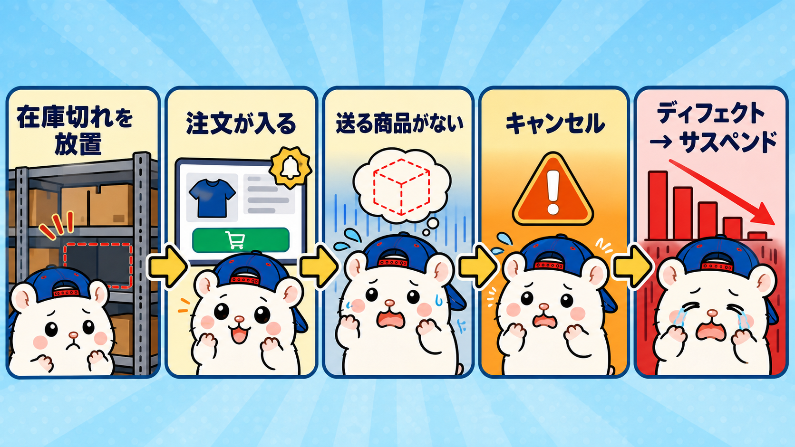
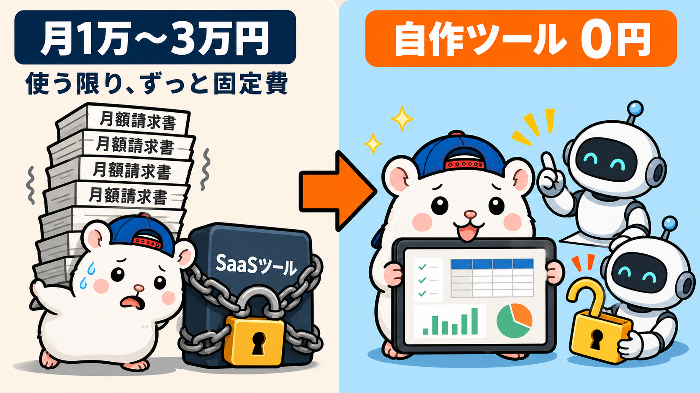
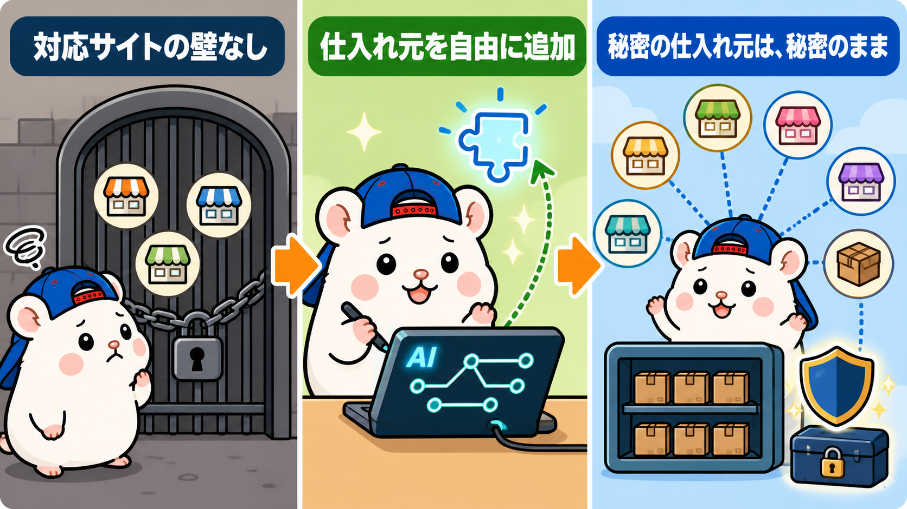
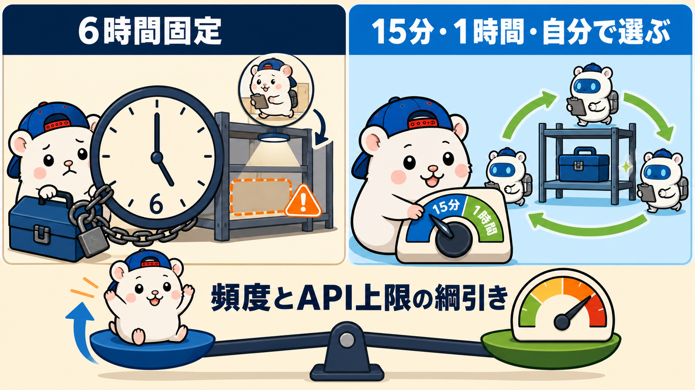

無在庫販売の在庫管理ツールに、みんな月1万〜3万円払っています。
ぼくの店は、0円です。
AI社員が作ったからです。
これ、自分の中ではけっこう衝撃だったので、今日はこの話をします。
在庫管理は、無在庫の肝です

先に説明しておくと、在庫管理ツールはこういう仕事をします。
eBayの出品と、仕入れ元のページを紐づけておく。
仕入れ元で商品が売り切れたら、eBayの出品も取り下げる。
無在庫は「売れてから仕入れる」商売なので、これをサボると最悪の事故が起きます。
仕入れ元にもう無い商品が、eBayで売れてしまう事故です。
お客さんに送るものがない。
キャンセルするしかない。
これが積み重なると、アカウントの成績に傷(ディフェクト)がついて、最後はサスペンドです。
店が終わります。
だから在庫管理ツールは、無在庫の肝中の肝です。
ここをケチる選択肢はありません。
今までは、借りるしかなかった

今までこのツールは、SaaSを契約するか、コンサルのコミュニティに入って使わせてもらうものでした。
相場は月1万〜3万円くらい。
出品数が増えると、料金も上がる仕組みが多いです。
無在庫をやる限り、ずっと払い続ける固定費でした。
それが、AIの登場で完全に不要になりました。
うちの店では、在庫監視担当という社員がこの仕事をしています。
中身はClaude Codeです。
ぼくが「在庫管理ツールを作って」と言ったら、作ってくれました。
しかも使ってみたら、借りていたツールより良いんです。
上位互換です。
理由は、3つあります。
上位互換①: 仕入れ元が、自由

借りるツールには「対応サイト」があります。
メルカリ、ラクマ、Amazon、楽天など、リストにあるサイトしか登録できません。
自作なら、この縛りがありません。
AIに「この仕入れ元を登録して」と言えば、どこでも対応してくれます。
もっと大事なのはここです。
運営に要望を出せば、対応サイトを増やしてくれるかもしれません。
でもそれは、自分だけの秘密の仕入れ元を、運営に晒すということです。
無在庫の強さは、人と違う仕入れ元を持っていることです。
自作ツールなら、誰にも言わずに済みます。
上位互換②: 巡回の頻度が、自由

借りるツールは、巡回のタイミングが決まっています。
6時間に1回とか、12時間に1回とか。
この6時間が、こわい。
巡回が終わった直後に、仕入れ元で売り切れたとします。
次の巡回まで、eBayには「もう無い商品」が6時間近く並びっぱなしです。
その間に売れたら、さっきの最悪の事故です。
自作なら、頻度は自分で決められます。
1時間に1回でも、極端な話、15分に1回でも設定できます。
正直に書いておくと、タダで無限に回せるわけではありません。
うちの巡回はGitHub Actionsという仕組みで動いていて、無料枠の範囲内です。
ただ、eBayのAPIには1日のコール数に上限があるので、出品数が増えるほど、頻度との綱引きにはなります。
それでも「6時間で固定」と「自分で選べる」は、まったく別物です。
上位互換③: 在庫管理以外にもつかえる
さらにAIであれば、在庫管理以外にもつかえます。
ぼくは、eBayにまつわる全ての業務をAIでやっています。
ぼくが実際にAIにやってもらっている業務の例を挙げます。
- リサーチ・出品
- 価格調整
- 顧客対応
- 梱包発送アプリ運用
- 収支集計・進捗管理
- デザイン作成
実際の梱包発送作業以外すべてです。
例えばClaude Codeの110ドルのプランに課金すれば、これだけのことが自動で回ります。
もちろんeBay以外のビジネスにもつかえます。
Claude Codeについて学びたい方はこちらの教材(980円)で学習してください。
※【2500部突破】Claude Codeの教科書 - AI秘書から始める爆速仕事術
※紹介リンクです(ここから買うと、ぼくに紹介料が入ります)
ツールに払うお金を、道具に払う
まとめます。
在庫管理ツールは、もう自分で作れます。
作ったほうが、仕入れ元も巡回頻度も自由で、上位互換です。
だからぼくは、月額ツールにお金を払うくらいなら、Claude CodeのMaxプランに課金することをおすすめします。
月110ドルからあり、Fableという最高クラスのAIを利用できます。
月1万〜3万円のツール代と、だいたい同じ金額です。
違いは、ツールは在庫管理しかできないけど、Claude Codeは何でもできることです。
リサーチも、出品も、集計も、eBay以外の副業も、ぜんぶ同じ課金の中でやれます。
うちの店の社員20名は、ぜんぶこの中に住んでいます。
台帳に書いておこう。
「ツールは、借りるものから作るものになった」。
▼この店のやり方は、ぜんぶ1冊にまとめてあります
リサーチ・出品・値付け・顧客対応まで、初月利益18万6,673円を出した実店舗の記録と手順を全部書いた教科書です。
読んだその日から、AI社員の作り方をそのまま真似できます。
『AI × eBay輸出の教科書 — 梱包以外、ぜんぶAI』(9,800円)
https://brmk.io/pqk3UP
※20部売れたら、14,800円に値上げします。